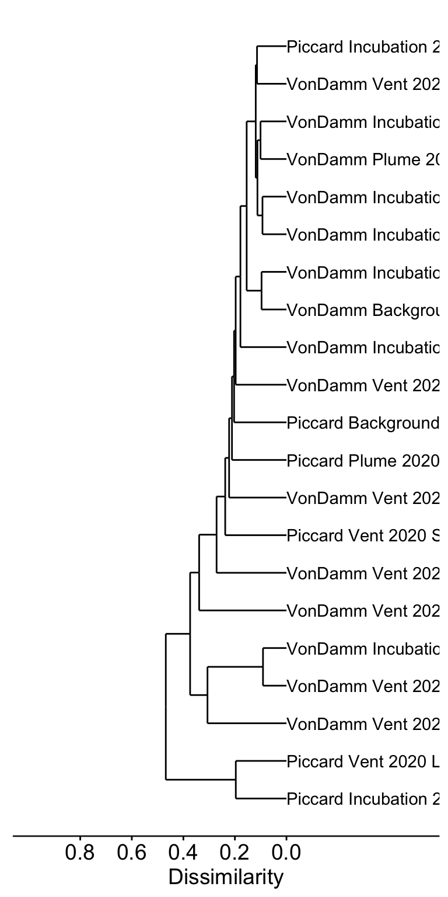
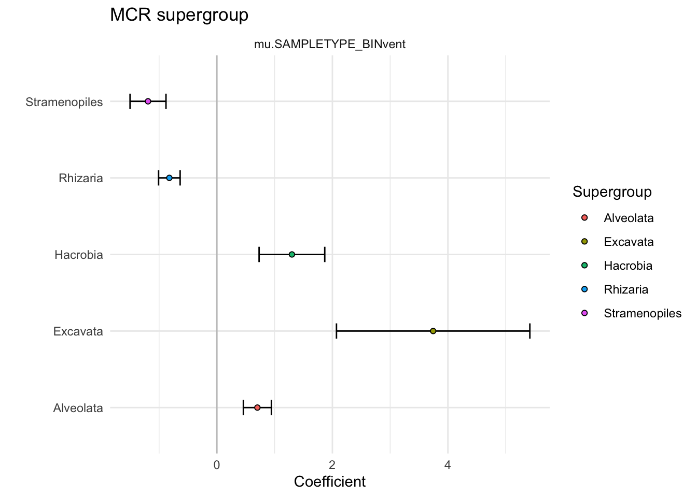

Code
library(tidyverse); library(phyloseq); library(ape)
library(ggupset); library(cowplot)Goals for this analysis are to investigate specific protistan taxonomic groups in the context of elevated grazing activity, cell biomass, and hydrothermal vent sample type.
Data originate from in situ MCR samples from a tag-sequence survey and the Tf time point from the grazing experiments. Additionally, in situ and grazing experiments were conducted within vent sites, at the plume, and in the background.
Set up R environment
library(tidyverse); library(phyloseq); library(ape)
library(ggupset); library(cowplot)Import previously sequenced and analyzed tag-sequence data. See https://shu251.github.io/microeuk-amplicon-survey/ for additional information.
load("input-data/MCR-amplicon-data.RData", verbose = T)Loading objects:
phylo_obj
samplenames
physeq_wnames
metadata_mcr
asv_wtax_qc
TAX
tax_matrix
physeq_mcr# physeq_mcrvent_ids <- c("BSW","Plume", "Shrimpocalypse", "LotsOShrimp", "X18", "OMT", "OldManTree", "Rav2", "MustardStand", "ShrimpHole", "WhiteCastle", "ArrowLoop")
vent_fullname <- c("Background","Plume", "Shrimpocalypse", "Lots 'O Shrimp", "X-18", "Old Man Tree", "Old Man Tree", "Ravelin #2", "Mustard Stand", "Shrimp Hole", "White Castle", "Arrow Loop")
site_ids <- c("VD", "Piccard")
# edit(samples)
samplenames_order <- c("Piccard Background", "Piccard Plume",
"Piccard Lots 'O Shrimp", "Piccard Shrimpocalypse",
"Von Damm Background", "Von Damm Plume",
"Von Damm Ravelin #2", "Von Damm X-18", "Von Damm Old Man Tree", "Von Damm Mustard Stand",
"Von Damm Arrow Loop", "Von Damm Shrimp Hole", "Von Damm White Castle")
samplenames_color <- c("#2b8cbe", "#084081",
"#a8ddb5", "#4eb3d3",
"#bd0026", "#800026",
"#fc4e2a", "#feb24c", "#fed976", "#fd8d3c",
"#fdd49e", "#ef6548", "#ffeda0")
names(samplenames_color) <- samplenames_order
site_fullname <- c("Von Damm", "Piccard")
site_color <- c("#264653", "#E76F51")
names(site_color) <- site_fullname
whole_pal <- c("#264653", "#2A9D8F", "#E9C46A","#F4A261", "#E76F51")
extra <- c("#eae2b7", "#5f0f40", "#90be6d", "#941b0c", "#577590")
# Colors for VD and Piccard
site_colors <- c("#418b84", "#943b36")
# site_colors
# Vent colors
vent_colors <- c("#253494","#1d91c0", "#E9C46A", "#E76F51", "#264653", "#2A9D8F", "#2A9D8F", "#90be6d", "#941b0c", "#577590", "#eae2b7", "#deebf7")
# vent_colors <- c("")
names(vent_colors) <- vent_fullname
# all_taxa_color = c("#fa9fb5", "#c51b8a", "#67000d", "#ef3b2c", "#ffffcc", "#feb24c", "#c7e9b4", "#1d91c0", "#deebf7", "#253494", "#9e9ac8", "#238b45", "#54278f", "#bdbdbd", "#252525", "#fa9fb5", "#c51b8a", "#67000d", "#ef3b2c", "#ffffcc", "#feb24c", "#c7e9b4", "#1d91c0", "#253494", "#9e9ac8", "#238b45", "#54278f", "#bdbdbd", "#252525")Ordination analysis and methods to look at whole protistan communities at MCR.
# | message: false
library(vegan); library(ggdendro); library(compositions)Loading required package: permuteLoading required package: latticeThis is vegan 2.6-4Welcome to compositions, a package for compositional data analysis.
Find an intro with "? compositions"
Attaching package: 'compositions'The following object is masked from 'package:ape':
balanceThe following objects are masked from 'package:stats':
anova, cor, cov, dist, varThe following object is masked from 'package:graphics':
segmentsThe following objects are masked from 'package:base':
%*%, norm, scale, scale.default# head(asv_wtax_qc)
asv_mcr_numeric <- asv_wtax_qc %>%
filter(value > 0) %>%
group_by(FeatureID, SAMPLENAME) %>%
summarise(MEAN_ACROSS_REPS = mean(value)) %>%
select(FeatureID, SAMPLENAME, MEAN_ACROSS_REPS) %>%
pivot_wider(names_from = SAMPLENAME, values_from = MEAN_ACROSS_REPS, values_fill = 0) %>%
column_to_rownames(var = "FeatureID")`summarise()` has grouped output by 'FeatureID'. You can override using the
`.groups` argument.Transform compositional data, center log ratio.
logratio_mcr <- data.frame(compositions::clr(t(asv_mcr_numeric)))
# dim(logratio_mcr)
# ?alr()
# ?ilr()
pca_logratio <- prcomp(logratio_mcr)
variance_logratio <- (pca_logratio$sdev^2)/sum(pca_logratio$sdev^2)
barplot(variance_logratio, main = "Log-Ratio PCA Screeplot", xlab = "PC Axis", ylab = "% Variance",
cex.names = 1.5, cex.axis = 1.5, cex.lab = 1.5, cex.main = 1.5)
# Extract PCA points
mcr_pca_pts <- data.frame(pca_logratio$x, SAMPLE = rownames(pca_logratio$x)) %>%
rownames_to_column(var = "SAMPLENAME") %>%
separate(SAMPLENAME, c("SITE", "SAMPLETYPE", "YEAR", "VENT"), " ",
remove = FALSE) Warning: Expected 4 pieces. Additional pieces discarded in 21 rows [1, 2, 3, 4, 5, 6, 7,
8, 9, 10, 11, 12, 13, 14, 15, 16, 17, 18, 19, 20, ...].# head(mcr_pca_pts)
pc1 <- round(variance_logratio[1] * 100, 2)
pc2 <- round(variance_logratio[2] * 100, 2)PCoA with all samples
# samples <- as.character(unique(tmp$SAMPLENAME))
# samples
# mcr_pca_pts
pca_plot <- mcr_pca_pts %>%
mutate(VENT_ORDER = factor(VENT, levels = vent_ids, labels = vent_fullname),
SITE_ORDER = factor(SITE, levels = c("VonDamm", "Piccard"), labels = site_fullname)) %>%
unite(SAMPLENAME, SITE_ORDER, VENT_ORDER, sep= " ", remove = FALSE) %>%
mutate(SAMPLENAME_ORDER = factor(SAMPLENAME, levels = samplenames_order)) %>%
mutate(TYPE = case_when(
SAMPLETYPE == "Incubation" ~ "Incubation",
TRUE ~ "in situ"
)) %>%
ggplot(aes(x = PC1, y = PC2)) +
geom_point(stroke = 2, size = 5, aes(shape = TYPE, fill = SAMPLENAME_ORDER, color = SAMPLENAME_ORDER)) +
scale_shape_manual(values = c(2,17)) +
scale_fill_manual(values = samplenames_color) +
scale_color_manual(values = samplenames_color) +
theme_linedraw() + coord_fixed(ratio = 1) +
guides(fill = guide_legend(override.aes = list(shape = c(22)))) +
geom_hline(yintercept = 0) + geom_vline(xintercept = 0) +
theme(legend.title = element_blank(),
axis.text = element_text(color = "black", face = "bold", size = 13)) +
labs(x = paste(pc1, "%"), y = paste(pc2, "%"))
pca_plot
# ?decostand()
# Relative abundance
rel_abun <- decostand(asv_mcr_numeric, MARGIN = 2, method = "total")
# Cluster dendrogram (average hierarchical clustering)
cluster_mcr <- hclust(dist(t(rel_abun)), method = "average")
dendro <- as.dendrogram(cluster_mcr)
mcr_dendro <- dendro_data(dendro, type = "rectangle")mcr_dendro_plot <- ggplot(segment(mcr_dendro)) +
geom_segment(aes(x = x, y = y, xend = xend,
yend = yend)) +
coord_flip() +
scale_y_reverse(expand = c(0.2, 0.5), breaks = c(0, 0.2, 0.4, 0.6, 0.8)) +
geom_text(aes(x = x, y = y, label = label, angle = 0, hjust = 0), data = label(mcr_dendro)) +
theme_dendro() + labs(y = "Dissimilarity") +
theme(axis.text.x = element_text(color = "black", size = 14), axis.line.x = element_line(color = "#252525"),
axis.ticks.x = element_line(), axis.title.x = element_text(color = "black",
size = 14))
# svg('figs/SUPPLEMENTARY-dendrogram-wreps.svg', w = 10, h = 8)
mcr_dendro_plot
PCoA with in situ only
asv_mcr_numeric_insitu <- asv_wtax_qc %>%
filter(value > 0) %>%
filter(SAMPLETYPE != "Incubation") %>%
group_by(FeatureID, SAMPLENAME) %>%
summarise(MEAN_ACROSS_REPS = mean(value)) %>%
select(FeatureID, SAMPLENAME, MEAN_ACROSS_REPS) %>%
pivot_wider(names_from = SAMPLENAME, values_from = MEAN_ACROSS_REPS, values_fill = 0) %>%
column_to_rownames(var = "FeatureID")`summarise()` has grouped output by 'FeatureID'. You can override using the
`.groups` argument.insitu_logratio_mcr <- data.frame(compositions::clr(t(asv_mcr_numeric_insitu)))
insitu_pca_logratio <- prcomp(insitu_logratio_mcr)
insitu_variance_logratio <- (insitu_pca_logratio$sdev^2)/sum(insitu_pca_logratio$sdev^2)
barplot(insitu_variance_logratio, main = "Log-Ratio PCA Screeplot", xlab = "PC Axis", ylab = "% Variance",
cex.names = 1.5, cex.axis = 1.5, cex.lab = 1.5, cex.main = 1.5)
# Extract PCA points for only insitu samples
insitu_mcr_pca_pts <- data.frame(insitu_pca_logratio$x, SAMPLE = rownames(insitu_pca_logratio$x)) %>%
rownames_to_column(var = "SAMPLENAME") %>%
separate(SAMPLENAME, c("SITE", "SAMPLETYPE", "YEAR", "VENT"), " ",
remove = FALSE) Warning: Expected 4 pieces. Additional pieces discarded in 13 rows [1, 2, 3, 4, 5, 6, 7,
8, 9, 10, 11, 12, 13].insitu_mcr_pca_pts %>%
mutate(VENT_ORDER = factor(VENT, levels = vent_ids, labels = vent_fullname),
SITE_ORDER = factor(SITE, levels = c("VonDamm", "Piccard"), labels = site_fullname)) %>%
mutate(TYPE = case_when(
SAMPLETYPE == "Incubation" ~ "Incubation",
TRUE ~ "in situ"
)) %>%
ggplot(aes(x = PC1, y = PC2)) +
geom_point(color = "black", stroke = 1.3, size = 5, aes(shape = SITE_ORDER, fill = VENT_ORDER)) +
scale_shape_manual(values = c(21, 24)) +
scale_fill_manual(values = vent_colors) +
theme_linedraw() +
guides(fill = guide_legend(override.aes = list(shape = c(22)))) +
geom_hline(yintercept = 0) + geom_vline(xintercept = 0)
out_labels <- as.data.frame(mcr_dendro$labels)
mcr_sample_order <- as.character(out_labels$label)alv <- c("Alveolata-Ellobiopsidae", "Alveolata-Perkinsea", "Alveolata-Unknown", "Alveolata-Chrompodellids", "Alveolata-Apicomplexa")
# head(asv_wtax_qc)
bubble <- asv_wtax_qc %>%
filter(value > 0) %>%
# Avg seq count by ASV across replicates
group_by(SAMPLENAME, SITE, VENT, SAMPLETYPE, Taxon, FeatureID) %>%
summarise(avg_seq = mean(value)) %>%
# Separate and curate taxa information
# filter(SAMPLETYPE != "Incubation") %>%
separate(Taxon, c("Domain", "Supergroup",
"Phylum", "Class", "Order",
"Family", "Genus", "Species"), sep = ";") %>%
filter(Domain == "Eukaryota") %>% #select eukaryotes only
filter(Supergroup != "Opisthokonta") %>% # remove multicellular metazoa
mutate(Supergroup = ifelse(is.na(Supergroup), "Unknown Eukaryota", Supergroup),
Phylum = ifelse(is.na(Phylum), "Unknown", Phylum),
Phylum = ifelse(Phylum == "Alveolata_X", "Ellobiopsidae", Phylum),
Supergroup = ifelse(Supergroup == "Alveolata", paste(Supergroup, Phylum, sep = "-"), Supergroup)) %>%
mutate(SUPERGROUP = case_when(
Supergroup %in% alv ~ "Other Alveolata",
Supergroup == "Eukaryota_X" ~ "Unknown Eukaryota",
Phylum == "Cercozoa" ~ "Rhizaria-Cercozoa",
Phylum == "Radiolaria" ~ "Rhizaria-Radiolaria",
Phylum == "Ochrophyta" ~ "Stramenopiles-Ochrophyta",
Phylum == "Opalozoa" ~ "Stramenopiles-Opalozoa",
Phylum == "Sagenista" ~ "Stramenopiles-Sagenista",
TRUE ~ Supergroup
)) %>%
# Taxa to supergroup
mutate(SupergroupPhylum = SUPERGROUP) %>%
group_by(SAMPLENAME, SITE, VENT, SAMPLETYPE) %>%
mutate(TOTAL_SEQ = sum(avg_seq)) %>%
ungroup() %>%
group_by(SAMPLENAME, SITE, VENT, SAMPLETYPE, SUPERGROUP) %>%
summarise(SUM = sum(avg_seq),
REL_ABUN = SUM/TOTAL_SEQ) %>%
mutate(SAMPLENAME_ORDER = factor(SAMPLENAME, levels = mcr_sample_order)) %>%
ggplot(aes(x = SAMPLENAME_ORDER, y = SUPERGROUP, size = REL_ABUN)) +
geom_point(shape = 21, color = "white", aes(size = REL_ABUN, fill = SUPERGROUP, alpha = 0.4)) +
scale_size_continuous(range = c(2,14)) +
# facet_grid(. ~ SITE, scales = "free", space = "free") +
theme_minimal() +coord_flip() +
theme(legend.position = "none",
axis.text.x = element_text(color = "black", angle = 45, hjust = 1, vjust = 1))`summarise()` has grouped output by 'SAMPLENAME', 'SITE', 'VENT', 'SAMPLETYPE',
'Taxon'. You can override using the `.groups` argument.Warning: Expected 8 pieces. Additional pieces discarded in 10924 rows [3, 10, 11, 12,
13, 14, 18, 19, 20, 21, 23, 27, 28, 30, 31, 32, 33, 34, 35, 38, ...].Warning: Expected 8 pieces. Missing pieces filled with `NA` in 6487 rows [1, 2, 4, 5, 6,
7, 8, 9, 15, 16, 17, 22, 24, 25, 26, 29, 36, 37, 48, 49, ...].Warning: Returning more (or less) than 1 row per `summarise()` group was deprecated in
dplyr 1.1.0.
Please use `reframe()` instead.
When switching from `summarise()` to `reframe()`, remember that `reframe()`
always returns an ungrouped data frame and adjust accordingly.`summarise()` has grouped output by 'SAMPLENAME', 'SITE', 'VENT', 'SAMPLETYPE',
'SUPERGROUP'. You can override using the `.groups` argument.bubble
# mcr_dendro_plot + bubble + patchwork::plot_layout(ncol = 2) + patchwork::plot_annotation(tag_levels = "a")alv <- c("Alveolata-Ellobiopsidae", "Alveolata-Perkinsea", "Alveolata-Unknown", "Alveolata-Chrompodellids", "Alveolata-Apicomplexa")
asv_wtax_qc %>%
filter(value > 0) %>%
# Avg seq count by ASV across replicates
group_by(SAMPLENAME, SITE, VENT, SAMPLETYPE, Taxon, FeatureID) %>%
summarise(avg_seq = mean(value)) %>%
# Separate and curate taxa information
# filter(SAMPLETYPE != "Incubation") %>%
separate(Taxon, c("Domain", "Supergroup",
"Phylum", "Class", "Order",
"Family", "Genus", "Species"), sep = ";") %>%
filter(Domain == "Eukaryota") %>% #select eukaryotes only
filter(Supergroup != "Opisthokonta") %>% # remove multicellular metazoa
mutate(Supergroup = ifelse(is.na(Supergroup), "Unknown Eukaryota", Supergroup),
Phylum = ifelse(is.na(Phylum), "Unknown", Phylum),
Phylum = ifelse(Phylum == "Alveolata_X", "Ellobiopsidae", Phylum),
Supergroup = ifelse(Supergroup == "Alveolata", paste(Supergroup, Phylum, sep = "-"), Supergroup)) %>%
mutate(SUPERGROUP = case_when(
Supergroup %in% alv ~ "Other Alveolata",
Supergroup == "Eukaryota_X" ~ "Unknown Eukaryota",
Phylum == "Cercozoa" ~ "Rhizaria-Cercozoa",
Phylum == "Radiolaria" ~ "Rhizaria-Radiolaria",
Phylum == "Ochrophyta" ~ "Stramenopiles-Ochrophyta",
Phylum == "Opalozoa" ~ "Stramenopiles-Opalozoa",
Phylum == "Sagenista" ~ "Stramenopiles-Sagenista",
TRUE ~ Supergroup
)) %>%
# Taxa to supergroup
mutate(SupergroupPhylum = SUPERGROUP) %>%
group_by(SAMPLENAME, SITE, VENT, SAMPLETYPE, SUPERGROUP) %>%
summarise(SUM = sum(avg_seq)) %>%
mutate(SAMPLENAME_ORDER = factor(SAMPLENAME, levels = mcr_sample_order)) %>%
ggplot(aes(x = SAMPLENAME_ORDER, y = SUM)) +
geom_bar(stat = "identity", position = "fill", color = "black", aes(fill = SUPERGROUP)) +
facet_grid(. ~ VENT + SITE, scales = "free", space = "free") +
theme_minimal() +
theme(legend.position = "right",
axis.text.x = element_text(color = "black", angle = 45, hjust = 1, vjust = 1))`summarise()` has grouped output by 'SAMPLENAME', 'SITE', 'VENT', 'SAMPLETYPE',
'Taxon'. You can override using the `.groups` argument.Warning: Expected 8 pieces. Additional pieces discarded in 10924 rows [3, 10, 11, 12,
13, 14, 18, 19, 20, 21, 23, 27, 28, 30, 31, 32, 33, 34, 35, 38, ...].Warning: Expected 8 pieces. Missing pieces filled with `NA` in 6487 rows [1, 2, 4, 5, 6,
7, 8, 9, 15, 16, 17, 22, 24, 25, 26, 29, 36, 37, 48, 49, ...].`summarise()` has grouped output by 'SAMPLENAME', 'SITE', 'VENT', 'SAMPLETYPE'.
You can override using the `.groups` argument.
In bar plot above, in situ and Tf incubation samples are paired for each site.
# | message: false
# remotes::install_github("adw96/breakaway")
# remotes::install_github("adw96/DivNet")
# library(breakaway); library(DivNet); library(phyloseq); library(tidyverse)load("input-data/MCR-amplicon-data.RData", verbose = TRUE)Loading objects:
phylo_obj
samplenames
physeq_wnames
metadata_mcr
asv_wtax_qc
TAX
tax_matrix
physeq_mcrsample_data(physeq_mcr) X VENT
52_MCR_Piccard_expTf_LotsOShrimp_A_0_Jun2021 2 LotsOShrimp
53_MCR_Piccard_expTf_LotsOShrimp_B_0_Jun2021 3 LotsOShrimp
54_MCR_VonDamm_expTf_MustardStand_0_0_Jun2021 9 MustardStand
55_MCR_VonDamm_expTf_ShrimpHole_0_0_Jun2021 10 ShrimpHole
57_MCR_Piccard_expTf_Shrimpocalypse_0_0_Jun2021 4 Shrimpocalypse
58_MCR_VonDamm_expTf_Plume_0_0_Jun2021 11 Plume
59_MCR_VonDamm_expTf_X18_0_0_Jun2021 12 X18
60_MCR_VonDamm_expTf_BSW_0_0_Jun2021 13 BSW
61_MCR_VonDamm_expTf_Rav2_0_0_Jun2021 14 Rav2
63_MCR_VonDamm_CTD_BSW_CTD002_0_Jun2021 8 BSW
65_MCR_VonDamm_CTD_Plume_CTD003_0_Jun2021 15 Plume
66_MCR_VonDamm_HOG_ArrowLoop_J21243HOG18_5_Jun2021 16 ArrowLoop
67_MCR_VonDamm_HOG_WhiteCastle_J21235HOG12_5_Jun2021 17 WhiteCastle
69_MCR_VonDamm_HOG_MustardStand_J21243HOG14_5_Jun2021 18 MustardStand
70_MCR_VonDamm_HOG_Rav2_J21238HOG14_5_Jun2021 19 Rav2
71_MCR_VonDamm_HOG_OldManTree_J21238HOG20_5_Jun2021 20 OldManTree
72_MCR_VonDamm_HOG_ShrimpHole_J21244HOG18_0_Jun2021 21 ShrimpHole
73_MCR_Piccard_CTD_BSW_CTD005_0_Jun2021 1 BSW
74_MCR_Piccard_CTD_Plume_CTD004_5_Jun2021 5 Plume
76_MCR_VonDamm_HOG_X18_J21235HOG20_0_Jun2021 22 X18
77_MCR_Piccard_HOG_Shrimpocalypse_J21240HOG14_0_Jun2021 6 Shrimpocalypse
78_MCR_Piccard_HOG_LotsOShrimp_J21241HOG14_0_Jun2021 7 LotsOShrimp
80_MCR_VonDamm_HOG_Rav2_J21244HOG20_0_Jun2021 23 Rav2
SITE SAMPLEID DEPTH
52_MCR_Piccard_expTf_LotsOShrimp_A_0_Jun2021 Piccard
53_MCR_Piccard_expTf_LotsOShrimp_B_0_Jun2021 Piccard
54_MCR_VonDamm_expTf_MustardStand_0_0_Jun2021 VonDamm
55_MCR_VonDamm_expTf_ShrimpHole_0_0_Jun2021 VonDamm
57_MCR_Piccard_expTf_Shrimpocalypse_0_0_Jun2021 Piccard
58_MCR_VonDamm_expTf_Plume_0_0_Jun2021 VonDamm
59_MCR_VonDamm_expTf_X18_0_0_Jun2021 VonDamm
60_MCR_VonDamm_expTf_BSW_0_0_Jun2021 VonDamm
61_MCR_VonDamm_expTf_Rav2_0_0_Jun2021 VonDamm
63_MCR_VonDamm_CTD_BSW_CTD002_0_Jun2021 VonDamm 2400
65_MCR_VonDamm_CTD_Plume_CTD003_0_Jun2021 VonDamm 1979
66_MCR_VonDamm_HOG_ArrowLoop_J21243HOG18_5_Jun2021 VonDamm 2309
67_MCR_VonDamm_HOG_WhiteCastle_J21235HOG12_5_Jun2021 VonDamm 2307
69_MCR_VonDamm_HOG_MustardStand_J21243HOG14_5_Jun2021 VonDamm 2374
70_MCR_VonDamm_HOG_Rav2_J21238HOG14_5_Jun2021 VonDamm 2389.6
71_MCR_VonDamm_HOG_OldManTree_J21238HOG20_5_Jun2021 VonDamm 2375.8
72_MCR_VonDamm_HOG_ShrimpHole_J21244HOG18_0_Jun2021 VonDamm 2376
73_MCR_Piccard_CTD_BSW_CTD005_0_Jun2021 Piccard 4776
74_MCR_Piccard_CTD_Plume_CTD004_5_Jun2021 Piccard 4944
76_MCR_VonDamm_HOG_X18_J21235HOG20_0_Jun2021 VonDamm 2377
77_MCR_Piccard_HOG_Shrimpocalypse_J21240HOG14_0_Jun2021 Piccard 4945
78_MCR_Piccard_HOG_LotsOShrimp_J21241HOG14_0_Jun2021 Piccard 4967
80_MCR_VonDamm_HOG_Rav2_J21244HOG20_0_Jun2021 VonDamm 2388.9
SAMPLETYPE
52_MCR_Piccard_expTf_LotsOShrimp_A_0_Jun2021 Incubation
53_MCR_Piccard_expTf_LotsOShrimp_B_0_Jun2021 Incubation
54_MCR_VonDamm_expTf_MustardStand_0_0_Jun2021 Incubation
55_MCR_VonDamm_expTf_ShrimpHole_0_0_Jun2021 Incubation
57_MCR_Piccard_expTf_Shrimpocalypse_0_0_Jun2021 Incubation
58_MCR_VonDamm_expTf_Plume_0_0_Jun2021 Incubation
59_MCR_VonDamm_expTf_X18_0_0_Jun2021 Incubation
60_MCR_VonDamm_expTf_BSW_0_0_Jun2021 Incubation
61_MCR_VonDamm_expTf_Rav2_0_0_Jun2021 Incubation
63_MCR_VonDamm_CTD_BSW_CTD002_0_Jun2021 Background
65_MCR_VonDamm_CTD_Plume_CTD003_0_Jun2021 Plume
66_MCR_VonDamm_HOG_ArrowLoop_J21243HOG18_5_Jun2021 Vent
67_MCR_VonDamm_HOG_WhiteCastle_J21235HOG12_5_Jun2021 Vent
69_MCR_VonDamm_HOG_MustardStand_J21243HOG14_5_Jun2021 Vent
70_MCR_VonDamm_HOG_Rav2_J21238HOG14_5_Jun2021 Vent
71_MCR_VonDamm_HOG_OldManTree_J21238HOG20_5_Jun2021 Vent
72_MCR_VonDamm_HOG_ShrimpHole_J21244HOG18_0_Jun2021 Vent
73_MCR_Piccard_CTD_BSW_CTD005_0_Jun2021 Background
74_MCR_Piccard_CTD_Plume_CTD004_5_Jun2021 Plume
76_MCR_VonDamm_HOG_X18_J21235HOG20_0_Jun2021 Vent
77_MCR_Piccard_HOG_Shrimpocalypse_J21240HOG14_0_Jun2021 Vent
78_MCR_Piccard_HOG_LotsOShrimp_J21241HOG14_0_Jun2021 Vent
80_MCR_VonDamm_HOG_Rav2_J21244HOG20_0_Jun2021 Vent
SAMPLETYPE_BIN YEAR
52_MCR_Piccard_expTf_LotsOShrimp_A_0_Jun2021 non-vent 2020
53_MCR_Piccard_expTf_LotsOShrimp_B_0_Jun2021 non-vent 2020
54_MCR_VonDamm_expTf_MustardStand_0_0_Jun2021 non-vent 2020
55_MCR_VonDamm_expTf_ShrimpHole_0_0_Jun2021 non-vent 2020
57_MCR_Piccard_expTf_Shrimpocalypse_0_0_Jun2021 non-vent 2020
58_MCR_VonDamm_expTf_Plume_0_0_Jun2021 non-vent 2020
59_MCR_VonDamm_expTf_X18_0_0_Jun2021 non-vent 2020
60_MCR_VonDamm_expTf_BSW_0_0_Jun2021 non-vent 2020
61_MCR_VonDamm_expTf_Rav2_0_0_Jun2021 non-vent 2020
63_MCR_VonDamm_CTD_BSW_CTD002_0_Jun2021 non-vent 2020
65_MCR_VonDamm_CTD_Plume_CTD003_0_Jun2021 non-vent 2020
66_MCR_VonDamm_HOG_ArrowLoop_J21243HOG18_5_Jun2021 vent 2020
67_MCR_VonDamm_HOG_WhiteCastle_J21235HOG12_5_Jun2021 vent 2020
69_MCR_VonDamm_HOG_MustardStand_J21243HOG14_5_Jun2021 vent 2020
70_MCR_VonDamm_HOG_Rav2_J21238HOG14_5_Jun2021 vent 2020
71_MCR_VonDamm_HOG_OldManTree_J21238HOG20_5_Jun2021 vent 2020
72_MCR_VonDamm_HOG_ShrimpHole_J21244HOG18_0_Jun2021 vent 2020
73_MCR_Piccard_CTD_BSW_CTD005_0_Jun2021 non-vent 2020
74_MCR_Piccard_CTD_Plume_CTD004_5_Jun2021 non-vent 2020
76_MCR_VonDamm_HOG_X18_J21235HOG20_0_Jun2021 vent 2020
77_MCR_Piccard_HOG_Shrimpocalypse_J21240HOG14_0_Jun2021 vent 2020
78_MCR_Piccard_HOG_LotsOShrimp_J21241HOG14_0_Jun2021 vent 2020
80_MCR_VonDamm_HOG_Rav2_J21244HOG20_0_Jun2021 vent 2020
TEMP pH PercSeawater
52_MCR_Piccard_expTf_LotsOShrimp_A_0_Jun2021 <NA> <NA> <NA>
53_MCR_Piccard_expTf_LotsOShrimp_B_0_Jun2021 <NA> <NA> <NA>
54_MCR_VonDamm_expTf_MustardStand_0_0_Jun2021 <NA> <NA> <NA>
55_MCR_VonDamm_expTf_ShrimpHole_0_0_Jun2021 <NA> <NA> <NA>
57_MCR_Piccard_expTf_Shrimpocalypse_0_0_Jun2021 <NA> <NA> <NA>
58_MCR_VonDamm_expTf_Plume_0_0_Jun2021 <NA> <NA> <NA>
59_MCR_VonDamm_expTf_X18_0_0_Jun2021 <NA> <NA> <NA>
60_MCR_VonDamm_expTf_BSW_0_0_Jun2021 <NA> <NA> <NA>
61_MCR_VonDamm_expTf_Rav2_0_0_Jun2021 <NA> <NA> <NA>
63_MCR_VonDamm_CTD_BSW_CTD002_0_Jun2021 4.181 <NA> 100
65_MCR_VonDamm_CTD_Plume_CTD003_0_Jun2021 4.208 <NA> <NA>
66_MCR_VonDamm_HOG_ArrowLoop_J21243HOG18_5_Jun2021 137 5.69 33.8
67_MCR_VonDamm_HOG_WhiteCastle_J21235HOG12_5_Jun2021 108 5.49 16.6
69_MCR_VonDamm_HOG_MustardStand_J21243HOG14_5_Jun2021 108 5.63 36.2
70_MCR_VonDamm_HOG_Rav2_J21238HOG14_5_Jun2021 94 5.81 33.4
71_MCR_VonDamm_HOG_OldManTree_J21238HOG20_5_Jun2021 121.6 5.69 25.6
72_MCR_VonDamm_HOG_ShrimpHole_J21244HOG18_0_Jun2021 21 7.72 96.4
73_MCR_Piccard_CTD_BSW_CTD005_0_Jun2021 4.46 <NA> 100
74_MCR_Piccard_CTD_Plume_CTD004_5_Jun2021 4.46 <NA> <NA>
76_MCR_VonDamm_HOG_X18_J21235HOG20_0_Jun2021 48 6.99 52
77_MCR_Piccard_HOG_Shrimpocalypse_J21240HOG14_0_Jun2021 85 5.11 81.7
78_MCR_Piccard_HOG_LotsOShrimp_J21241HOG14_0_Jun2021 36 5.92 94.9
80_MCR_VonDamm_HOG_Rav2_J21244HOG20_0_Jun2021 98.2 5.81 33.4
Mg H2 H2S
52_MCR_Piccard_expTf_LotsOShrimp_A_0_Jun2021 0 <NA>
53_MCR_Piccard_expTf_LotsOShrimp_B_0_Jun2021 0 <NA>
54_MCR_VonDamm_expTf_MustardStand_0_0_Jun2021 0 <NA>
55_MCR_VonDamm_expTf_ShrimpHole_0_0_Jun2021 0 <NA>
57_MCR_Piccard_expTf_Shrimpocalypse_0_0_Jun2021 0 <NA>
58_MCR_VonDamm_expTf_Plume_0_0_Jun2021 0 <NA>
59_MCR_VonDamm_expTf_X18_0_0_Jun2021 0 <NA>
60_MCR_VonDamm_expTf_BSW_0_0_Jun2021 0 <NA>
61_MCR_VonDamm_expTf_Rav2_0_0_Jun2021 0 <NA>
63_MCR_VonDamm_CTD_BSW_CTD002_0_Jun2021 <NA> <NA>
65_MCR_VonDamm_CTD_Plume_CTD003_0_Jun2021 <NA> <NA>
66_MCR_VonDamm_HOG_ArrowLoop_J21243HOG18_5_Jun2021 18.1 11500 1.74
67_MCR_VonDamm_HOG_WhiteCastle_J21235HOG12_5_Jun2021 8.9 14500 1.96
69_MCR_VonDamm_HOG_MustardStand_J21243HOG14_5_Jun2021 19.4 9800 1.79
70_MCR_VonDamm_HOG_Rav2_J21238HOG14_5_Jun2021 18 10200 1.37
71_MCR_VonDamm_HOG_OldManTree_J21238HOG20_5_Jun2021 13.7 11600 1.77
72_MCR_VonDamm_HOG_ShrimpHole_J21244HOG18_0_Jun2021 51.8 5.52744 <NA>
73_MCR_Piccard_CTD_BSW_CTD005_0_Jun2021 53.7 <NA>
74_MCR_Piccard_CTD_Plume_CTD004_5_Jun2021 <NA> <NA>
76_MCR_VonDamm_HOG_X18_J21235HOG20_0_Jun2021 28 2.11
77_MCR_Piccard_HOG_Shrimpocalypse_J21240HOG14_0_Jun2021 43.9 0 <NA>
78_MCR_Piccard_HOG_LotsOShrimp_J21241HOG14_0_Jun2021 51 22700 <NA>
80_MCR_VonDamm_HOG_Rav2_J21244HOG20_0_Jun2021 18 10200 1.37
CH4 ProkConc
52_MCR_Piccard_expTf_LotsOShrimp_A_0_Jun2021 <NA>
53_MCR_Piccard_expTf_LotsOShrimp_B_0_Jun2021 <NA>
54_MCR_VonDamm_expTf_MustardStand_0_0_Jun2021 <NA>
55_MCR_VonDamm_expTf_ShrimpHole_0_0_Jun2021 <NA>
57_MCR_Piccard_expTf_Shrimpocalypse_0_0_Jun2021 <NA>
58_MCR_VonDamm_expTf_Plume_0_0_Jun2021 <NA>
59_MCR_VonDamm_expTf_X18_0_0_Jun2021 <NA>
60_MCR_VonDamm_expTf_BSW_0_0_Jun2021 <NA>
61_MCR_VonDamm_expTf_Rav2_0_0_Jun2021 <NA>
63_MCR_VonDamm_CTD_BSW_CTD002_0_Jun2021 <NA> 34705.9161
65_MCR_VonDamm_CTD_Plume_CTD003_0_Jun2021 <NA> 16478.313
66_MCR_VonDamm_HOG_ArrowLoop_J21243HOG18_5_Jun2021 1893.66 10369.792
67_MCR_VonDamm_HOG_WhiteCastle_J21235HOG12_5_Jun2021 2251.92
69_MCR_VonDamm_HOG_MustardStand_J21243HOG14_5_Jun2021 1819.9608 56677
70_MCR_VonDamm_HOG_Rav2_J21238HOG14_5_Jun2021 1893.66
71_MCR_VonDamm_HOG_OldManTree_J21238HOG20_5_Jun2021 1985.784
72_MCR_VonDamm_HOG_ShrimpHole_J21244HOG18_0_Jun2021 218.0268
73_MCR_Piccard_CTD_BSW_CTD005_0_Jun2021 <NA> 11860.187
74_MCR_Piccard_CTD_Plume_CTD004_5_Jun2021 <NA> 51429.13
76_MCR_VonDamm_HOG_X18_J21235HOG20_0_Jun2021 1310.208 111429.781
77_MCR_Piccard_HOG_Shrimpocalypse_J21240HOG14_0_Jun2021 27.53484 238585.68
78_MCR_Piccard_HOG_LotsOShrimp_J21241HOG14_0_Jun2021 11.46432 53878.136
80_MCR_VonDamm_HOG_Rav2_J21244HOG20_0_Jun2021 1893.66
Sample_or_Control
52_MCR_Piccard_expTf_LotsOShrimp_A_0_Jun2021 Sample
53_MCR_Piccard_expTf_LotsOShrimp_B_0_Jun2021 Sample
54_MCR_VonDamm_expTf_MustardStand_0_0_Jun2021 Sample
55_MCR_VonDamm_expTf_ShrimpHole_0_0_Jun2021 Sample
57_MCR_Piccard_expTf_Shrimpocalypse_0_0_Jun2021 Sample
58_MCR_VonDamm_expTf_Plume_0_0_Jun2021 Sample
59_MCR_VonDamm_expTf_X18_0_0_Jun2021 Sample
60_MCR_VonDamm_expTf_BSW_0_0_Jun2021 Sample
61_MCR_VonDamm_expTf_Rav2_0_0_Jun2021 Sample
63_MCR_VonDamm_CTD_BSW_CTD002_0_Jun2021 Sample
65_MCR_VonDamm_CTD_Plume_CTD003_0_Jun2021 Sample
66_MCR_VonDamm_HOG_ArrowLoop_J21243HOG18_5_Jun2021 Sample
67_MCR_VonDamm_HOG_WhiteCastle_J21235HOG12_5_Jun2021 Sample
69_MCR_VonDamm_HOG_MustardStand_J21243HOG14_5_Jun2021 Sample
70_MCR_VonDamm_HOG_Rav2_J21238HOG14_5_Jun2021 Sample
71_MCR_VonDamm_HOG_OldManTree_J21238HOG20_5_Jun2021 Sample
72_MCR_VonDamm_HOG_ShrimpHole_J21244HOG18_0_Jun2021 Sample
73_MCR_Piccard_CTD_BSW_CTD005_0_Jun2021 Sample
74_MCR_Piccard_CTD_Plume_CTD004_5_Jun2021 Sample
76_MCR_VonDamm_HOG_X18_J21235HOG20_0_Jun2021 Sample
77_MCR_Piccard_HOG_Shrimpocalypse_J21240HOG14_0_Jun2021 Sample
78_MCR_Piccard_HOG_LotsOShrimp_J21241HOG14_0_Jun2021 Sample
80_MCR_VonDamm_HOG_Rav2_J21244HOG20_0_Jun2021 SampleRscript run on HPC:
# | eval: false
gen_divnet <- divnet(tax_glom(physeq_mcr, taxrank = "Genus"), base = 3)
# Incubation vs in situ
gen_divnet_SAMPLETYPE <- divnet(tax_glom(physeq_mcr, taxrank = "Genus"), X = "SAMPLETYPE", base = 3)
# Vent vs. non-vent
gen_divnet_SAMPLETYPE_BIN <- divnet(tax_glom(physeq_mcr, taxrank = "Genus"), X = "SAMPLETYPE_BIN", base = 3)
# location and vent vs plume vs background
# Piccard vs. Von Damm
gen_divnet_SITE <- divnet(tax_glom(physeq_mcr, taxrank = "Genus"), X = "SITE", base = 3)
save(gen_divnet, gen_divnet_SAMPLETYPE, gen_divnet_SAMPLETYPE_BIN, gen_divnet_SITE, file = "GENUS.Rdata")
###
## Analyzed at the ASV level:
spp_divnet <- divnet(tax_glom(physeq_mcr, taxrank = "Species"), base = 3)
# Incubation vs. in situ
spp_divnet_SAMPLETYPE <- divnet(tax_glom(physeq_mcr, taxrank = "Species"), X = "SAMPLETYPE", base = 3)
# Vent vs. non-vent
spp_divnet_SAMPLETYPE_BIN <- divnet(tax_glom(physeq_mcr, taxrank = "Species"), X = "SAMPLETYPE_BIN", base = 3)
# Piccard vs. VD
spp_divnet_SITE <- divnet(tax_glom(physeq_mcr, taxrank = "Species"), X = "SITE", base = 3)
# save(spp_divnet, spp_divnet_SAMPLETYPE, spp_divnet_SAMPLETYPE_BIN, spp_divnet_SITE, file = "SPECIES.Rdata")Above is run on HPC. Bring outputs locally to visualize output below.
load("input-data/SPECIES.Rdata", verbose = TRUE)Loading objects:
spp_divnet
spp_divnet_SAMPLETYPE
spp_divnet_SAMPLETYPE_BIN
spp_divnet_SITEload("input-data/GENUS.Rdata", verbose = TRUE)Loading objects:
gen_divnet
gen_divnet_SAMPLETYPE
gen_divnet_SAMPLETYPE_BIN
gen_divnet_SITE# head(metadata_mcr)
fxn_extract_divet <- function(df){
df$shannon %>% summary %>%
pivot_longer(cols = starts_with("estimate"), names_to = "ESTIMATE-shannon", values_to = "Shannon") %>%
pivot_longer(cols = starts_with("error"), names_to = "ERROR-shannon", values_to = "Shannon-error") %>%
pivot_longer(cols = starts_with("lower"), names_to = "LOWER-shannon", values_to = "Shannon-lower") %>%
pivot_longer(cols = starts_with("upper"), names_to = "UPPER-shannon", values_to = "Shannon-upper") %>%
left_join(df$simpson %>% summary %>%
pivot_longer(cols = starts_with("estimate"), names_to = "ESTIMATE-simpson", values_to = "Simpson") %>%
pivot_longer(cols = starts_with("error"), names_to = "ERROR-simpson", values_to = "Simpson-error") %>%
pivot_longer(cols = starts_with("lower"), names_to = "LOWER-simpson", values_to = "Simpson-lower") %>%
pivot_longer(cols = starts_with("upper"), names_to = "UPPER-simpson", values_to = "Simpson-upper"),
by = c("sample_names" = "sample_names")) %>%
left_join(metadata_mcr %>% rownames_to_column(var = "sample_names")) %>%
select(-sample_names, -ends_with("-simpson"), -ends_with("-shannon"), -starts_with("model."), -starts_with("name.")) %>%
mutate(TYPE_BIN = case_when(
SAMPLETYPE != "Incubation" ~ "in situ",
TRUE ~ "Incubation"
)) %>%
distinct()
}gen_divnet gen_divnet_SAMPLETYPE gen_divnet_SAMPLETYPE_BIN gen_divnet_SITE spp_divnet spp_divnet_SAMPLETYPE spp_divnet_SAMPLETYPE_BIN spp_divnet_SITE
### Set colors and symbols for dataset
sampletype_order <- c("Background", "Plume", "Vent", "Incubation")
site_symbol<- c(21, 23, 24, 22)
site_fullname <- c("Von Damm", "Piccard")
site_color <- c("#264653", "#E76F51")
site_alpha <- c(1, 0.4)
site_order <- c("VonDamm", "Piccard")
names(site_color) <- site_fullname
bin_type_order <- c("in situ", "Incubation")
names(site_alpha) <- bin_type_order
###
plot_sampletype <- function(df){
df$SITE_ORDER <- factor(df$SITE, levels = site_order, labels = site_fullname)
df$SAMPLETYPE_ORDER <- factor(df$SAMPLETYPE, levels = sampletype_order)
df$TYPE_BIN_ORDER <- factor(df$TYPE_BIN, levels = bin_type_order)
names(site_symbol) <- site_order
plot_grid(df %>%
ggplot(aes(x = VENT, y = Shannon)) +
geom_jitter(color = "black", shape = 21, size = 3, aes(fill = SITE_ORDER, alpha = TYPE_BIN_ORDER)) +
scale_alpha_manual(values = site_alpha) +
scale_fill_manual(values = site_color) +
theme_linedraw() +
theme(axis.text.y = element_text(size = 14),
axis.text.x = element_blank(),
strip.background = element_blank(),
strip.text = element_text(color = "black"),
legend.position = "right",
axis.ticks.x = element_blank()) +
labs(x = "", y = "Shannon") +
coord_flip(),
df %>%
ggplot(aes(x = VENT, y = Simpson)) +
geom_jitter(color = "black", shape = 21, size = 3, aes(fill = SITE_ORDER, alpha = TYPE_BIN_ORDER)) +
scale_alpha_manual(values = site_alpha) +
scale_fill_manual(values = site_color) +
theme_linedraw() +
theme(axis.text.x = element_text(vjust = 1, hjust = 0.5, size = 14),
axis.text = element_text(size = 14),
strip.background = element_blank(),
strip.text = element_blank(),
legend.title = element_blank(),
legend.position = "right") +
labs(x = "", y = "Simpson") +
coord_flip(),
ncol = 1, axis = c("lrt"), align = c("vh"))
}gen_divnet gen_divnet_SAMPLETYPE gen_divnet_SAMPLETYPE_BIN gen_divnet_SITE spp_divnet spp_divnet_SAMPLETYPE spp_divnet_SAMPLETYPE_BIN spp_divnet_SITE
# spp_alpha_18s <- fxn_extract_divet(spp_divnet)
# spp_alpha_label <- fxn_extract_divet(spp_divnet_SAMPLETYPE)
# spp_alpha_TYPE <- fxn_extract_divet(spp_divnet_SAMPLETYPE_BIN)
# spp_alpha_TYPE_SITE <- fxn_extract_divet(spp_divnet_SITE)
# #
# head(spp_alpha_18s)
#
# plot_sampletype(spp_alpha_18s)# load("input-data/MCR-amplicon-data.RData", verbose=TRUE)Generate upsetR plots with varied taxonomic levels.
Questions:
# options for taxa: SupergroupPhylum, Supergroup, Phylum, Class, Order, Family, Genus, Species
alv <- c("Alveolata-Ellobiopsidae", "Alveolata-Perkinsea", "Alveolata-Unknown", "Alveolata-Chrompodellids", "Alveolata-Apicomplexa")
all_taxa_color = c("#fa9fb5", "#c51b8a", "#67000d", "#ef3b2c", "#ffffcc", "#feb24c", "#c7e9b4", "#1d91c0", "#deebf7", "#253494", "#9e9ac8", "#238b45", "#54278f", "#bdbdbd", "#252525", "#fa9fb5", "#c51b8a", "#67000d", "#ef3b2c", "#ffffcc", "#feb24c", "#c7e9b4", "#1d91c0", "#253494", "#9e9ac8", "#238b45", "#54278f", "#bdbdbd", "#252525")
asv_wtax_qc %>%
filter(value > 0) %>%
filter(SAMPLETYPE != "Incubation") %>%
separate(Taxon, c("Domain", "Supergroup",
"Phylum", "Class", "Order",
"Family", "Genus", "Species"), sep = ";") %>%
filter(Domain == "Eukaryota") %>% #select eukaryotes only
filter(Supergroup != "Opisthokonta") %>% # remove multicellular metazoa
mutate(Supergroup = ifelse(is.na(Supergroup), "Unknown Eukaryota", Supergroup),
Phylum = ifelse(is.na(Phylum), "Unknown", Phylum),
Phylum = ifelse(Phylum == "Alveolata_X", "Ellobiopsidae", Phylum),
Supergroup = ifelse(Supergroup == "Alveolata", paste(Supergroup, Phylum, sep = "-"), Supergroup)) %>%
mutate(SUPERGROUP = case_when(
Supergroup %in% alv ~ "Other Alveolata",
Supergroup == "Eukaryota_X" ~ "Unknown Eukaryota",
Phylum == "Cercozoa" ~ "Rhizaria-Cercozoa",
Phylum == "Radiolaria" ~ "Rhizaria-Radiolaria",
Phylum == "Ochrophyta" ~ "Stramenopiles-Ochrophyta",
Phylum == "Opalozoa" ~ "Stramenopiles-Opalozoa",
Phylum == "Sagenista" ~ "Stramenopiles-Sagenista",
TRUE ~ Supergroup
)) %>%
# Taxa to supergroup
mutate(SupergroupPhylum = SUPERGROUP) %>% #add modified "supergroup-phylum category"
# Average across replicates
group_by(FeatureID, SAMPLENAME, VENT, SupergroupPhylum) %>%
summarise(AVG = mean(value)) %>%
ungroup() %>%
separate(SAMPLENAME, c("SITE", "SAMPLETYPE", "YEAR", "Sample_tmp"), remove = TRUE) %>%
mutate(REGION = "Mid-Cayman Rise") %>%
mutate(VENTNAME = paste(SITE, VENT, sep = " ")) %>%
select(-Sample_tmp) %>%
unite(SAMPLE, SITE, SAMPLETYPE, VENT, sep = " ", remove = FALSE) %>%
group_by(SupergroupPhylum, SAMPLE) %>%
summarise(SUM = sum(AVG)) %>%
ungroup() %>%
distinct(SupergroupPhylum, SUM, SAMPLE, .keep_all = TRUE) %>%
group_by(SupergroupPhylum) %>%
summarise(SAMPLE = list(SAMPLE)) %>%
ggplot(aes(x = SAMPLE)) +
geom_bar(color = "black", width = 0.7, aes(fill = SupergroupPhylum)) +
scale_x_upset(n_intersections = 25) +
scale_y_continuous(expand = c(0,0)) +
labs(x = "", y = "Shared at taxonomic level") +
theme_linedraw() +
theme(axis.text.y = element_text(color="black", size=14, face = "bold"),
axis.text.x = element_text(color="black", size=14, face = "bold"),
axis.title = element_text(color="black", size=14, face = "bold"),
legend.text = element_text(color = "black", size = 12, face = "bold"),
legend.title = element_blank(),
panel.grid.minor = element_blank(),
plot.margin = margin(1, 1, 1, 5, "cm")) +
scale_fill_manual(values = all_taxa_color)Warning: Expected 8 pieces. Additional pieces discarded in 5926 rows [5, 6, 7, 8, 9, 10,
11, 14, 15, 16, 17, 20, 21, 22, 24, 25, 26, 28, 29, 30, ...].Warning: Expected 8 pieces. Missing pieces filled with `NA` in 3451 rows [1, 2, 3, 4,
12, 13, 18, 19, 23, 27, 35, 44, 45, 46, 48, 49, 53, 54, 55, 56, ...].`summarise()` has grouped output by 'FeatureID', 'SAMPLENAME', 'VENT'. You can
override using the `.groups` argument.Warning: Expected 4 pieces. Additional pieces discarded in 7678 rows [1, 2, 3, 4, 5, 6,
7, 8, 9, 10, 11, 12, 13, 14, 15, 16, 17, 18, 19, 20, ...].`summarise()` has grouped output by 'SupergroupPhylum'. You can override using
the `.groups` argument.
# Filter data to reduce noise and show sample type to vent ecosystem variability.
# asv_wtax_qc %>%
filter(value > 0) %>%
filter(SAMPLETYPE != "Incubation") %>%
separate(Taxon, c("Domain", "Supergroup",
"Phylum", "Class", "Order",
"Family", "Genus", "Species"), sep = ";", remove = FALSE) %>%
filter(Domain == "Eukaryota") %>% #select eukaryotes only
filter(Supergroup != "Opisthokonta") %>% # remove multicellular metazoa
mutate(Supergroup = ifelse(is.na(Supergroup), "Unknown Eukaryota", Supergroup),
Phylum = ifelse(is.na(Phylum), "Unknown", Phylum),
Phylum = ifelse(Phylum == "Alveolata_X", "Ellobiopsidae", Phylum),
Supergroup = ifelse(Supergroup == "Alveolata", paste(Supergroup, Phylum, sep = "-"), Supergroup)) %>%
mutate(SUPERGROUP = case_when(
Supergroup %in% alv ~ "Other Alveolata",
Supergroup == "Eukaryota_X" ~ "Unknown Eukaryota",
Phylum == "Cercozoa" ~ "Rhizaria-Cercozoa",
Phylum == "Radiolaria" ~ "Rhizaria-Radiolaria",
Phylum == "Ochrophyta" ~ "Stramenopiles-Ochrophyta",
Phylum == "Opalozoa" ~ "Stramenopiles-Opalozoa",
Phylum == "Sagenista" ~ "Stramenopiles-Sagenista",
TRUE ~ Supergroup
)) %>%
# Taxa to supergroup
mutate(SupergroupPhylum = SUPERGROUP) %>% #add modified "supergroup-phylum category"
# Average across replicates
group_by(FeatureID, SAMPLENAME, VENT, SupergroupPhylum, Taxon) %>%
summarise(AVG = mean(value)) %>%
ungroup() %>%
separate(SAMPLENAME, c("SITE", "SAMPLETYPE", "YEAR", "Sample_tmp"), remove = TRUE) %>%
mutate(REGION = "Mid-Cayman Rise") %>%
mutate(VENTNAME = paste(SITE, VENT, sep = " ")) %>%
select(-Sample_tmp) %>%
unite(SAMPLE, SITE, SAMPLETYPE, VENT, sep = " ", remove = FALSE) %>%
group_by(SupergroupPhylum, Taxon, SAMPLE) %>%
summarise(SUM = sum(AVG)) %>%
ungroup() %>%
distinct(Taxon, SupergroupPhylum, SUM, SAMPLE, .keep_all = TRUE) %>%
group_by(SupergroupPhylum, Taxon) %>%
summarise(SAMPLE = list(SAMPLE)) %>%
ggplot(aes(x = SAMPLE)) +
geom_bar(color = "black", width = 0.7, aes(fill = SupergroupPhylum)) +
scale_x_upset(n_intersections = 25) +
scale_y_continuous(expand = c(0,0)) +
labs(x = "", y = "Shared at taxonomic level") +
theme_linedraw() +
theme(axis.text.y = element_text(color="black", size=14, face = "bold"),
axis.text.x = element_text(color="black", size=14, face = "bold"),
axis.title = element_text(color="black", size=14, face = "bold"),
legend.text = element_text(color = "black", size = 12, face = "bold"),
legend.title = element_blank(),
panel.grid.minor = element_blank(),
plot.margin = margin(1, 1, 1, 5, "cm")) +
scale_fill_manual(values = all_taxa_color)Warning: Expected 8 pieces. Additional pieces discarded in 5926 rows [5, 6, 7, 8, 9, 10,
11, 14, 15, 16, 17, 20, 21, 22, 24, 25, 26, 28, 29, 30, ...].Warning: Expected 8 pieces. Missing pieces filled with `NA` in 3451 rows [1, 2, 3, 4,
12, 13, 18, 19, 23, 27, 35, 44, 45, 46, 48, 49, 53, 54, 55, 56, ...].`summarise()` has grouped output by 'FeatureID', 'SAMPLENAME', 'VENT',
'SupergroupPhylum'. You can override using the `.groups` argument.Warning: Expected 4 pieces. Additional pieces discarded in 7678 rows [1, 2, 3, 4, 5, 6,
7, 8, 9, 10, 11, 12, 13, 14, 15, 16, 17, 18, 19, 20, ...].`summarise()` has grouped output by 'SupergroupPhylum', 'Taxon'. You can
override using the `.groups` argument.
`summarise()` has grouped output by 'SupergroupPhylum'. You can override using
the `.groups` argument.Warning: Removed 300 rows containing non-finite values (`stat_count()`).
# head(asv_wtax_qc)
# unique(asv_wtax_qc$SAMPLETYPE)
shared_exp <- asv_wtax_qc %>%
filter(value > 0) %>%
mutate(EXP_BIN = case_when(
SAMPLETYPE == "Incubation" ~ "Incubation",
TRUE ~ "in situ"
)) %>%
select(FeatureID, SITE, EXP_BIN, SAMPLETYPE_BIN, VENT) %>%
add_column(PRESENCE = 1) %>%
select(FeatureID, EXP_BIN, SITE, VENT, PRESENCE) %>%
pivot_wider(names_from = EXP_BIN, values_from = PRESENCE, values_fn = sum) %>%
mutate(EXP_PA = case_when(
(`in situ` > 0 & Incubation > 0) ~ "Shared",
`in situ` > 0 ~ "In situ only",
Incubation > 0 ~ "Incubation only",
)) %>%
select(FeatureID, EXP_PA)Number of ASVs that are shared or unique at Piccard and Von Damm
table(left_join(shared_across, shared_exp) %>%
left_join(shared_type) %>% select(FIELD_PA))Joining with `by = join_by(FeatureID)`
Joining with `by = join_by(FeatureID)`FIELD_PA
Piccard only Shared across VonDamm only
1861 5535 7277 Number of ASVs that are shared between in situ and incubation experiments
table(left_join(shared_across, shared_exp) %>%
left_join(shared_type) %>% select(EXP_PA))Joining with `by = join_by(FeatureID)`
Joining with `by = join_by(FeatureID)`EXP_PA
In situ only Incubation only Shared
6362 5573 2738 table(left_join(shared_across, shared_exp) %>%
left_join(shared_type) %>% select(TYPE_PA))Joining with `by = join_by(FeatureID)`
Joining with `by = join_by(FeatureID)`TYPE_PA
Cosmo Non-vent only Vent only
7586 2034 5053 For ASVs shared between in situ and experiment (Tf)
table(left_join(shared_across, shared_exp) %>%
left_join(shared_type) %>%
filter(EXP_PA == "Shared") %>%
select(TYPE_PA))Joining with `by = join_by(FeatureID)`
Joining with `by = join_by(FeatureID)`TYPE_PA
Cosmo Vent only
2488 250 # select(FIELD_PA))What is the taxonomic composition of those that are shared between the grazing experiments and in situ?
left_join(shared_across, shared_exp) %>%
left_join(shared_type) %>%
right_join(asv_wtax_qc %>% filter(value > 0)) %>%
# filter(EXP_PA == "Shared") %>%
group_by(SAMPLENAME, SITE, VENT, SAMPLETYPE, Taxon, FeatureID, EXP_PA) %>%
summarise(avg_seq = mean(value)) %>%
separate(Taxon, c("Domain", "Supergroup",
"Phylum", "Class", "Order",
"Family", "Genus", "Species"), sep = ";", remove = FALSE) %>%
filter(Domain == "Eukaryota") %>% #select eukaryotes only
filter(Supergroup != "Opisthokonta") %>% # remove multicellular metazoa
mutate(Supergroup = ifelse(is.na(Supergroup), "Unknown Eukaryota", Supergroup),
Phylum = ifelse(is.na(Phylum), "Unknown", Phylum),
Phylum = ifelse(Phylum == "Alveolata_X", "Ellobiopsidae", Phylum),
Supergroup = ifelse(Supergroup == "Alveolata", paste(Supergroup, Phylum, sep = "-"), Supergroup)) %>%
mutate(SUPERGROUP = case_when(
Supergroup %in% alv ~ "Other Alveolata",
Supergroup == "Eukaryota_X" ~ "Unknown Eukaryota",
Phylum == "Cercozoa" ~ "Rhizaria-Cercozoa",
Phylum == "Radiolaria" ~ "Rhizaria-Radiolaria",
Phylum == "Ochrophyta" ~ "Stramenopiles-Ochrophyta",
Phylum == "Opalozoa" ~ "Stramenopiles-Opalozoa",
Phylum == "Sagenista" ~ "Stramenopiles-Sagenista",
TRUE ~ Supergroup
)) %>%
group_by(SITE, VENT, SUPERGROUP, EXP_PA) %>%
summarise(SUM = sum(avg_seq)) %>%
# mutate(SAMPLENAME_ORDER = factor(SAMPLENAME, levels = mcr_sample_order)) %>%
ggplot(aes(x = VENT, y = SUM)) +
geom_bar(stat = "identity", position = "fill", color = "black", aes(fill = SUPERGROUP)) +
facet_grid(EXP_PA ~ SITE, scales = "free", space = "free") +
theme_minimal() +
theme(legend.position = "right",
axis.text.x = element_text(color = "black", angle = 45, hjust = 1, vjust = 1))Joining with `by = join_by(FeatureID)`
Joining with `by = join_by(FeatureID)`
Joining with `by = join_by(FeatureID)`Warning in right_join(., asv_wtax_qc %>% filter(value > 0)): Detected an unexpected many-to-many relationship between `x` and `y`.
Row 7 of `x` matches multiple rows in `y`.
Row 7 of `y` matches multiple rows in `x`.
If a many-to-many relationship is expected, set `relationship =
"many-to-many"` to silence this warning.`summarise()` has grouped output by 'SAMPLENAME', 'SITE', 'VENT', 'SAMPLETYPE',
'Taxon', 'FeatureID'. You can override using the `.groups` argument.Warning: Expected 8 pieces. Additional pieces discarded in 22276 rows [3, 17, 18, 19,
20, 21, 22, 23, 24, 25, 26, 27, 28, 32, 33, 34, 35, 36, 37, 38, ...].Warning: Expected 8 pieces. Missing pieces filled with `NA` in 11065 rows [1, 2, 4, 5,
6, 7, 8, 9, 10, 11, 12, 13, 14, 15, 16, 29, 30, 31, 39, 40, ...].`summarise()` has grouped output by 'SITE', 'VENT', 'SUPERGROUP'. You can
override using the `.groups` argument.
Create table as output
tax_table_shared <- left_join(shared_across, shared_exp) %>%
left_join(shared_type) %>%
right_join(asv_wtax_qc %>% filter(value > 0)) %>%
filter(EXP_PA == "Shared") %>%
select(FeatureID, ends_with("_PA"), Taxon) %>%
distinct()Joining with `by = join_by(FeatureID)`
Joining with `by = join_by(FeatureID)`
Joining with `by = join_by(FeatureID)`Warning in right_join(., asv_wtax_qc %>% filter(value > 0)): Detected an unexpected many-to-many relationship between `x` and `y`.
Row 7 of `x` matches multiple rows in `y`.
Row 7 of `y` matches multiple rows in `x`.
If a many-to-many relationship is expected, set `relationship =
"many-to-many"` to silence this warning.# write_delim(tax_table_shared, file = "output-data/list-of-shared-taxa.txt", delim = "\t")Corncob analysis can be used to identify specific ASVs that may be enriched when we compare non-vent to vent samples.
Questions:
For vent vs. non-vent ASVs, what ASVs are enriched at Piccard?
For vent vs. non-vent ASVs, what ASVs are enriched at Von Damm?
For vent vs. non-vent ASVs, what ASVs are enriched at both sites?
# | message: false
# devtools::install_github("bryandmartin/corncob")
library(corncob); library(phyloseq)load("input-data/MCR-amplicon-data.RData", verbose = TRUE)Loading objects:
phylo_obj
samplenames
physeq_wnames
metadata_mcr
asv_wtax_qc
TAX
tax_matrix
physeq_mcrExplore data input for corncob
# otu_table(physeq_mcr)[1:10, 1:3]
# sample_data(physeq_mcr)
# tax_table(physeq_mcr)[1:3, ]
# Designated vent vs. non-vent
unique(sample_data(physeq_mcr)$SAMPLETYPE_BIN)[1] "non-vent" "vent" #Designats Piccard vs. vondamm.
unique(sample_data(physeq_mcr)$SITE)[1] "Piccard" "VonDamm"Start by removing incubation samples for now. Subset to eukaryotes only and use phyloseqs tax glom to summarize to Supergroup, Phylum, Class, Order, Genus, & species.
head(tax_table(physeq_mcr))Taxonomy Table: [6 taxa by 8 taxonomic ranks]:
Domain Supergroup Phylum
0c7bdd7d35a3559db857584cecc4f5c9 "Eukaryota" "Opisthokonta" "Choanoflagellida"
7b0dd4c34fe16642ff23b7effa1bf1bd "Eukaryota" "Alveolata" "Ciliophora"
dc268dc3fdd431dc0de1fcc60de681f0 "Eukaryota" "Rhizaria" "Cercozoa"
08586d1dca4dda0f128d142b85379e0b "Eukaryota" "Apusozoa" "Apusomonadidae"
e3bed7480f3f3c95f0f4db2e03cee011 "Eukaryota" "Rhizaria" "Radiolaria"
44dcf603d76f712038c8b797beb1282f "Eukaryota" "Alveolata" "Dinoflagellata"
Class
0c7bdd7d35a3559db857584cecc4f5c9 "Choanoflagellatea"
7b0dd4c34fe16642ff23b7effa1bf1bd "CONThreeP"
dc268dc3fdd431dc0de1fcc60de681f0 "Filosa-Thecofilosea"
08586d1dca4dda0f128d142b85379e0b "Apusomonadidae_Group-1"
e3bed7480f3f3c95f0f4db2e03cee011 "Acantharea"
44dcf603d76f712038c8b797beb1282f "Syndiniales"
Order
0c7bdd7d35a3559db857584cecc4f5c9 "Acanthoecida"
7b0dd4c34fe16642ff23b7effa1bf1bd "CONThreeP_X"
dc268dc3fdd431dc0de1fcc60de681f0 "Ventricleftida"
08586d1dca4dda0f128d142b85379e0b "Apusomonadidae_Group-1_X"
e3bed7480f3f3c95f0f4db2e03cee011 "Acantharea_1"
44dcf603d76f712038c8b797beb1282f "Dino-Group-IV"
Family
0c7bdd7d35a3559db857584cecc4f5c9 "Stephanoecidae_Group_D"
7b0dd4c34fe16642ff23b7effa1bf1bd "CONThreeP_XX"
dc268dc3fdd431dc0de1fcc60de681f0 NA
08586d1dca4dda0f128d142b85379e0b "Apusomonadidae_Group-1_XX"
e3bed7480f3f3c95f0f4db2e03cee011 "Acantharea_1_X"
44dcf603d76f712038c8b797beb1282f "Dino-Group-IV-Hematodinium-Group"
Genus
0c7bdd7d35a3559db857584cecc4f5c9 "Stephanoecidae_Group_D_X"
7b0dd4c34fe16642ff23b7effa1bf1bd NA
dc268dc3fdd431dc0de1fcc60de681f0 NA
08586d1dca4dda0f128d142b85379e0b NA
e3bed7480f3f3c95f0f4db2e03cee011 "Acantharea_1_XX"
44dcf603d76f712038c8b797beb1282f "Hematodinium"
Species
0c7bdd7d35a3559db857584cecc4f5c9 "Stephanoecidae_Group_D_X_sp."
7b0dd4c34fe16642ff23b7effa1bf1bd NA
dc268dc3fdd431dc0de1fcc60de681f0 NA
08586d1dca4dda0f128d142b85379e0b NA
e3bed7480f3f3c95f0f4db2e03cee011 "Acantharea_1_XX_sp."
44dcf603d76f712038c8b797beb1282f "Hematodinium_sp." mcr_super <- physeq_mcr %>%
phyloseq::subset_samples(SAMPLETYPE %in% c("Background", "Plume", "Vent")) %>%
phyloseq::subset_taxa(Domain == "Eukaryota") %>%
tax_glom("Supergroup")
mcr_phy <- physeq_mcr %>%
phyloseq::subset_samples(SAMPLETYPE %in% c("Background", "Plume", "Vent")) %>%
phyloseq::subset_taxa(Domain == "Eukaryota") %>%
tax_glom("Phylum")
mcr_class <- physeq_mcr %>%
phyloseq::subset_samples(SAMPLETYPE %in% c("Background", "Plume", "Vent")) %>%
phyloseq::subset_taxa(Domain == "Eukaryota") %>%
tax_glom("Class")
mcr_order <- physeq_mcr %>%
phyloseq::subset_samples(SAMPLETYPE %in% c("Background", "Plume", "Vent")) %>%
phyloseq::subset_taxa(Domain == "Eukaryota") %>%
tax_glom("Order")
mcr_fam <- physeq_mcr %>%
phyloseq::subset_samples(SAMPLETYPE %in% c("Background", "Plume", "Vent")) %>%
phyloseq::subset_taxa(Domain == "Eukaryota") %>%
tax_glom("Family")
mcr_genera <- physeq_mcr %>%
phyloseq::subset_samples(SAMPLETYPE %in% c("Background", "Plume", "Vent")) %>%
phyloseq::subset_taxa(Domain == "Eukaryota") %>%
tax_glom("Genus")
mcr_spp <- physeq_mcr %>%
phyloseq::subset_samples(SAMPLETYPE %in% c("Background", "Plume", "Vent")) %>%
phyloseq::subset_taxa(Domain == "Eukaryota") %>%
tax_glom("Species")
# sample_data(mcr_order)Differential tests in corncob
These tests work to see if taxa are differentially-abundant or variable across a given variable. In this study we have different taxonomic levels, are there more general or species-specific trends? We also have across sample types and site Below set up differential tests across sample types and site (and either or) at different taxonomic levels.
Function to perform specific differential tests across vent fields. Below use SITE_PICK parameter to choose between vent fields. Then use the df, to specify the taxonomic level.
corncob_mcr <- function(df_in){
# da_analysis_output <- differentialTest(formula = ~ SAMPLETYPE + SITE,
# phi.formula = ~ SAMPLETYPE+ SITE,
# formula_null = ~ 1,
# phi.formula_null = ~ SAMPLETYPE + SITE,
# test = "Wald", boot = FALSE,
# data = df_in,
# fdr_cutoff = 0.05)
## SAMPLETYPE_BIN specifically compares vent to non-vent.
da_analysis_output <- differentialTest(formula = ~ SAMPLETYPE_BIN,
phi.formula = ~ SAMPLETYPE_BIN,
formula_null = ~ 1,
phi.formula_null = ~ SAMPLETYPE_BIN,
test = "Wald", boot = FALSE,
data = df_in,
fdr_cutoff = 0.05)
# da_analysis_output <- differentialTest(formula = ~ SITE,
# phi.formula = ~ SITE,
# formula_null = ~ 1,
# phi.formula_null = ~ SITE,
# test = "Wald", boot = FALSE,
# data = df_in,
# fdr_cutoff = 0.05)
#
list_ofsig <- as.character(da_analysis_output$significant_taxa)
total_number <- length(list_ofsig)[1]
#
sig_taxa_names <- as.data.frame(tax_table(df_in)) %>%
rownames_to_column(var = "FEATURE") %>%
filter(FEATURE %in% list_ofsig) %>%
rownames_to_column(var = "NUMBER")
#
for(var in 1:total_number){
out_0 <- data.frame(da_analysis_output$significant_models[[var]]$coefficients) %>%
add_column(NUMBER = as.character(var))
cat("extracted # ",var, "\n")
if (!exists("extracted_coef")){
extracted_coef <- out_0 # create the final count table
} else {
extracted_coef <- rbind(extracted_coef, out_0)
}
rm(out_0) # remove excess df
}
output_full <- extracted_coef %>%
rownames_to_column(var = "variable") %>%
filter(grepl("mu.", variable)) %>%
left_join(sig_taxa_names, by = c("NUMBER" = "NUMBER")) %>%
mutate(VARIABLE = str_remove(variable, "[:digit:]+")) %>% select(-variable) #%>%
# pivot_wider(names_from = VARIABLE, names_glue = "{VARIABLE}_{.value}", values_from = c(Estimate, Std..Error, t.value, Pr...t..))
rm(extracted_coef)
return(output_full)}Define SITE_PICK
mcr <- c("Piccard", "VonDamm")
picc <- c("Piccard")
vd <- c("VonDamm")Function to visualize output from corncob
plot_corn <- function(cob_out, LEVEL, TITLE){
level <- enquo(LEVEL)
cob_out %>%
filter(VARIABLE != "mu.(Intercept)") %>%
ggplot(aes(y = level, x = Estimate)) +
geom_vline(xintercept = 0, alpha = 0.2) +
geom_errorbar(aes(xmin = (Estimate-Std..Error), xmax = (Estimate+Std..Error)), width = 0.2) +
geom_point(aes(fill = level), shape = 21, color = "black") +
facet_grid(. ~ VARIABLE, space = "free", scales = "free") +
theme(legend.position = element_blank(),
axis.text.y = element_text(color = "black")) +
theme_minimal() +
labs(x = "Coefficient", y = "", title = TITLE)
}What main supergroups are enriched at MCR?
analysis_super_all <- corncob_mcr(mcr_super %>%
phyloseq::subset_samples(SITE %in% mcr))extracted # 1
extracted # 2
extracted # 3
extracted # 4
extracted # 5 Plot supergroup enrichment
analysis_super_all %>%
filter(VARIABLE != "mu.(Intercept)") %>%
ggplot(aes(y = Supergroup, x = Estimate)) +
geom_vline(xintercept = 0, alpha = 0.2) +
geom_errorbar(aes(xmin = (Estimate-Std..Error), xmax = (Estimate+Std..Error)), width = 0.2) +
geom_point(aes(fill = Supergroup), shape = 21, color = "black") +
facet_grid(. ~ VARIABLE, space = "free", scales = "free") +
theme(legend.position = element_blank(),
axis.text.y = element_text(color = "black")) +
theme_minimal() +
labs(x = "Coefficient", y = "", title = "MCR supergroup")
analysis_phylum <- corncob_mcr(mcr_phy)extracted # 1
extracted # 2
extracted # 3
extracted # 4 analysis_phylum %>%
filter(VARIABLE != "mu.(Intercept)") %>%
ggplot(aes(y = Phylum, x = Estimate)) +
geom_vline(xintercept = 0, alpha = 0.2) +
geom_errorbar(aes(xmin = (Estimate-Std..Error), xmax = (Estimate+Std..Error)), width = 0.2) +
geom_point(aes(fill = Phylum), shape = 21, color = "black") +
facet_grid(Supergroup ~ VARIABLE, space = "free", scales = "free") +
theme(legend.position = element_blank(),
axis.text.y = element_text(color = "black")) +
theme_minimal() +
labs(x = "Coefficient", y = "", title = "MCR Phylum")
analysis_class <- corncob_mcr(mcr_class %>%
phyloseq::subset_samples(SITE %in% mcr))extracted # 1
extracted # 2
extracted # 3
extracted # 4
extracted # 5
extracted # 6
extracted # 7
extracted # 8
extracted # 9
extracted # 10
extracted # 11
extracted # 12
extracted # 13
extracted # 14
extracted # 15
extracted # 16 # head(analysis_class)
# unique(analysis_class$VARIABLE)
analysis_class %>%
unite(Class, c(Phylum, Class), sep = " ", remove = FALSE) %>%
filter(VARIABLE != "mu.(Intercept)") %>%
ggplot(aes(y = Class, x = Estimate)) +
geom_vline(xintercept = 0, alpha = 0.2) +
geom_errorbar(aes(xmin = (Estimate-Std..Error), xmax = (Estimate+Std..Error)), width = 0.2) +
geom_point(aes(fill = Supergroup), shape = 21, color = "black") +
facet_grid(Supergroup ~ VARIABLE, space = "free", scales = "free") +
theme(legend.position = element_blank(),
axis.text.y = element_text(color = "black")) +
theme_minimal() +
labs(x = "Coefficient", y = "", title = "Class level test for differential abundance")
Class level looks pretty good. Keep this one. Looks at major taxonomic groups that were more enriched at vents? Work on the language here. Repeat vent vs. plume at ASV level. ID some of the core ASVs that can help elaborate on what we see above (table in supplementary)
analysis_order <- corncob_mcr(mcr_order)# head(analysis_class)
# unique(analysis_class$VARIABLE)
analysis_order %>%
unite(Order, c(Phylum, Class, Order), sep = " ", remove = FALSE) %>%
filter(VARIABLE != "mu.(Intercept)") %>%
ggplot(aes(y = Order, x = Estimate)) +
geom_vline(xintercept = 0, alpha = 0.2) +
geom_errorbar(aes(xmin = (Estimate-Std..Error), xmax = (Estimate+Std..Error)), width = 0.2) +
geom_point(aes(fill = Supergroup), shape = 21, color = "black") +
facet_grid(Supergroup ~ VARIABLE, space = "free", scales = "free") +
theme(legend.position = element_blank(),
axis.text.y = element_text(color = "black")) +
theme_minimal() +
labs(x = "Coefficient", y = "", title = "Order level test for differential abundance")
# ?geom_errorbarPlan to pairing with tree below
analysis_fam <- corncob_mcr(mcr_fam)extracted # 1
extracted # 2
extracted # 3
extracted # 4
extracted # 5
extracted # 6
extracted # 7
extracted # 8
extracted # 9
extracted # 10
extracted # 11
extracted # 12
extracted # 13
extracted # 14
extracted # 15
extracted # 16
extracted # 17
extracted # 18
extracted # 19
extracted # 20
extracted # 21
extracted # 22
extracted # 23
extracted # 24
extracted # 25
extracted # 26
extracted # 27
extracted # 28
extracted # 29
extracted # 30
extracted # 31
extracted # 32
extracted # 33
extracted # 34 # head(tax_table(mcr_fam))fam_corncob <- analysis_fam %>%
# unite(Family, c(Class, Order, Family), sep = " ", remove = FALSE) %>%
unite(Family, c(Family), sep = " ", remove = FALSE) %>%
unite(SUPPHY, c(Supergroup, Phylum), sep = ";", remove = FALSE) %>%
filter(VARIABLE != "mu.(Intercept)") %>%
ggplot(aes(y = Family, x = Estimate)) +
geom_vline(xintercept = 0, alpha = 0.2) +
geom_errorbar(aes(xmin = (Estimate-Std..Error), xmax = (Estimate+Std..Error)), width = 0.2) +
geom_point(aes(fill = SUPPHY), shape = 21, color = "black", size = 3) +
scale_fill_brewer(palette = "Dark2") +
facet_grid(SUPPHY ~ VARIABLE, space = "free", scales = "free") +
theme_minimal() +
theme(legend.position = "none",
axis.text.y = element_text(color = "black", size = 13),
axis.text.x = element_text(color = "black", size = 13),
strip.text.x = element_blank(),
strip.text.y = element_text(color = "black", angle = 0,
hjust = 0, vjust = 0.5,
size = 12)) +
labs(x = "Coefficient", y = "", title = "")
fam_corncobWarning in RColorBrewer::brewer.pal(n, pal): n too large, allowed maximum for palette Dark2 is 8
Returning the palette you asked for with that many colors
Plan to pairing with tree below
analysis_genus <- corncob_mcr(mcr_genera)analysis_genus %>%
unite(Genus, c(Phylum, Genus), sep = " ", remove = FALSE) %>%
filter(VARIABLE != "mu.(Intercept)") %>%
ggplot(aes(y = Genus, x = Estimate)) +
geom_vline(xintercept = 0, alpha = 0.2) +
geom_errorbar(aes(xmin = (Estimate-Std..Error), xmax = (Estimate+Std..Error)), width = 0.2) +
geom_point(aes(fill = Supergroup), shape = 21, color = "black") +
facet_grid(Supergroup ~ VARIABLE, space = "free", scales = "free") +
theme(legend.position = element_blank(),
axis.text.y = element_text(color = "black")) +
theme_minimal() +
labs(x = "Coefficient", y = "", title = "Genus level test for differential abundance")analysis_spp <- corncob_mcr(mcr_spp)analysis_spp %>%
unite(Species, c(Genus, Species), sep = " ", remove = FALSE) %>%
filter(VARIABLE != "mu.(Intercept)") %>%
ggplot(aes(y = Species, x = Estimate)) +
geom_vline(xintercept = 0, alpha = 0.2) +
geom_errorbar(aes(xmin = (Estimate-Std..Error), xmax = (Estimate+Std..Error)), width = 0.2) +
geom_point(aes(fill = Supergroup), shape = 21, color = "black") +
facet_grid(Supergroup + Order ~ VARIABLE, space = "free", scales = "free") +
theme(legend.position = element_blank(),
axis.text.y = element_text(color = "black")) +
theme_minimal() +
labs(x = "Coefficient", y = "", title = "Species level test for differential abundance")Which ASVs were enriched within vent site, and also found in grazing experiments?
enriched_at_family <- as.character(analysis_fam$FEATURE)Import table of shared ASVs
tax_table_shared <- read_delim(file = "output-data/list-of-shared-taxa.txt")Rows: 1505 Columns: 5
Column specification
Delimiter: "\t"
chr (5): FeatureID, FIELD_PA, EXP_PA, TYPE_PA, Taxon
Use `spec()` to retrieve the full column specification for this data.
Specify the column types or set `show_col_types = FALSE` to quiet this message.enriched_and_shared<- tax_table_shared %>%
filter(FeatureID %in% enriched_at_family)
# View(enriched_and_shared)
# write_delim(enriched_and_shared, file = "output-data/enriched-and-shared.txt", delim = "\t")There was a total of 29 ASVs that were both a part of the enriched at vents (compared to background) and were present in both in situ and incubation (Tf) samples. These 29 ASVs represent a subset that we hypothesize are more likely to be involved in grazing. Another observation is that the majority of them are cosmopolitan. This indicates that based on the grazing experiments, the taxa that are enriched at vents and are subsequently members of the grazing population in the experiments are also able to inhabit plume and background.
# svg("../../../Manuscripts_presentations_reviews/MCR-grazing-2023/svg-files-figures/fig3.svg", w = 18, h = 9)
# pca_plot + fam_corncob + patchwork::plot_layout(ncol = 2, widths = c(1, 1)) + patchwork::plot_annotation(tag_levels = "a")
# dev.off()sessionInfo()R version 4.3.0 (2023-04-21)
Platform: x86_64-apple-darwin20 (64-bit)
Running under: macOS Ventura 13.1
Matrix products: default
BLAS: /Library/Frameworks/R.framework/Versions/4.3-x86_64/Resources/lib/libRblas.0.dylib
LAPACK: /Library/Frameworks/R.framework/Versions/4.3-x86_64/Resources/lib/libRlapack.dylib; LAPACK version 3.11.0
locale:
[1] en_US.UTF-8/en_US.UTF-8/en_US.UTF-8/C/en_US.UTF-8/en_US.UTF-8
time zone: America/New_York
tzcode source: internal
attached base packages:
[1] stats graphics grDevices utils datasets methods base
other attached packages:
[1] corncob_0.3.1 compositions_2.0-6 ggdendro_0.1.23 vegan_2.6-4
[5] lattice_0.21-8 permute_0.9-7 cowplot_1.1.1 ggupset_0.3.0
[9] ape_5.7-1 phyloseq_1.44.0 lubridate_1.9.2 forcats_1.0.0
[13] stringr_1.5.0 dplyr_1.1.2 purrr_1.0.1 readr_2.1.4
[17] tidyr_1.3.0 tibble_3.2.1 ggplot2_3.4.2 tidyverse_2.0.0
loaded via a namespace (and not attached):
[1] bitops_1.0-7 lpSolveAPI_5.5.2.0-17.9 detectseparation_0.3
[4] rlang_1.1.1 magrittr_2.0.3 ade4_1.7-22
[7] compiler_4.3.0 mgcv_1.8-42 vctrs_0.6.2
[10] reshape2_1.4.4 pkgconfig_2.0.3 crayon_1.5.2
[13] fastmap_1.1.1 backports_1.4.1 XVector_0.40.0
[16] labeling_0.4.2 utf8_1.2.3 ROI_1.0-1
[19] rmarkdown_2.22 tzdb_0.4.0 bit_4.0.5
[22] xfun_0.39 zlibbioc_1.46.0 trust_0.1-8
[25] GenomeInfoDb_1.36.0 ROI.plugin.lpsolve_1.0-1 jsonlite_1.8.5
[28] biomformat_1.28.0 rhdf5filters_1.12.1 Rhdf5lib_1.22.0
[31] VGAM_1.1-8 parallel_4.3.0 cluster_2.1.4
[34] R6_2.5.1 RColorBrewer_1.1-3 stringi_1.7.12
[37] numDeriv_2016.8-1.1 Rcpp_1.0.10 iterators_1.0.14
[40] knitr_1.43 IRanges_2.34.0 Matrix_1.5-4.1
[43] splines_4.3.0 igraph_1.4.3 timechange_0.2.0
[46] tidyselect_1.2.0 rstudioapi_0.14 yaml_2.3.7
[49] codetools_0.2-19 plyr_1.8.8 Biobase_2.60.0
[52] withr_2.5.0 evaluate_0.21 survival_3.5-5
[55] bayesm_3.1-5 Biostrings_2.68.1 pillar_1.9.0
[58] tensorA_0.36.2 checkmate_2.2.0 foreach_1.5.2
[61] stats4_4.3.0 generics_0.1.3 vroom_1.6.3
[64] RCurl_1.98-1.12 S4Vectors_0.38.1 hms_1.1.3
[67] munsell_0.5.0 scales_1.2.1 glue_1.6.2
[70] slam_0.1-50 tools_4.3.0 robustbase_0.95-1
[73] data.table_1.14.8 registry_0.5-1 rhdf5_2.44.0
[76] grid_4.3.0 colorspace_2.1-0 nlme_3.1-162
[79] GenomeInfoDbData_1.2.10 cli_3.6.1 fansi_1.0.4
[82] gtable_0.3.3 DEoptimR_1.0-13 digest_0.6.31
[85] BiocGenerics_0.46.0 htmlwidgets_1.6.2 farver_2.1.1
[88] htmltools_0.5.5 multtest_2.56.0 lifecycle_1.0.3
[91] bit64_4.0.5 MASS_7.3-60